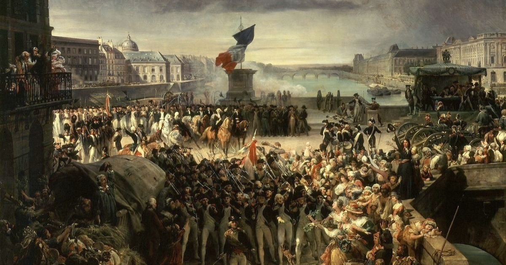

História da França
A história da França começa na Antiguidade, quando a região era habitada por povos celtas chamados gauleses. No século I a.C., foi conquistada pelos romanos e incorporada ao Império como a província da Gália. Com a queda do Império Romano no século V, a Gália foi invadida por povos germânicos, principalmente os francos.
O rei Clóvis I unificou os francos e se converteu ao cristianismo, fundando a dinastia merovíngia. No século VIII, Carlos Magno, da dinastia carolíngia, expandiu o território e foi coroado imperador em 800. Após sua morte, o império foi dividido, e surgiu o Reino da França. A dinastia capetíngia assumiu o poder no século X e consolidou o reino. Durante a Idade Média, a França participou da Guerra dos Cem Anos contra a Inglaterra (1337–1453). Nesse período surgiu Joana d’Arc, heroína que liderou os franceses contra os ingleses. Nos séculos XVI e XVII, o país enfrentou guerras religiosas entre católicos e protestantes. Luís XIV, o Rei Sol, fortaleceu o absolutismo e construiu o Palácio de Versalhes.

No século XVIII, crises econômicas e sociais levaram à Revolução Francesa, em 1789. A monarquia foi derrubada, o rei Luís XVI foi executado e a Primeira República foi proclamada. Napoleão Bonaparte assumiu o poder e tornou-se imperador em 1804. Ele conquistou grande parte da Europa, mas foi derrotado em 1815.
A França passou por várias mudanças: monarquias, repúblicas e o Segundo Império com Napoleão III. Em 1870, foi proclamada a Terceira República após derrota na guerra contra a Prússia. Na Primeira Guerra Mundial (1914–1918), a França foi uma das nações mais atingidas. Na Segunda Guerra Mundial, foi ocupada pela Alemanha nazista entre 1940 e 1944.
Após a libertação, instaurou-se a Quarta República, marcada por instabilidade política. Em 1958, Charles de Gaulle fundou a Quinta República, que vigora até hoje. Durante o século XX, a França perdeu colônias, mas tornou-se uma potência democrática. É membro fundador da União Europeia e da ONU, além de ter influência global. A França moderna é uma república democrática com economia avançada. Sua cultura, idioma, arte e filosofia influenciaram o mundo.
A Revolução Francesa espalhou os ideais de liberdade, igualdade e fraternidade. A França continua a desempenhar um papel central na política internacional. Sua história é marcada por conquistas, revoluções, guerras e reconstrução.
